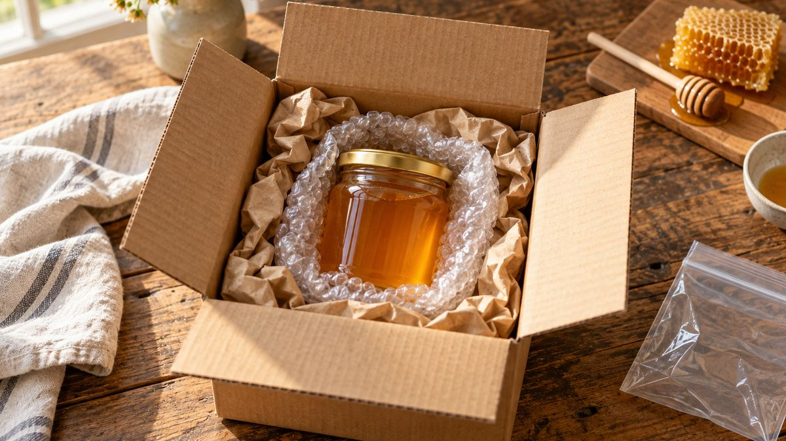

Como embalar mel pra não vazar no transporte

Pote de mel chegando vazado, com a caixa toda lambuzada, é um dos jeitos mais rápidos de perder a confiança de um cliente que comprou pela internet. A boa notícia: na maioria dos casos, dá pra prevenir, porque a causa raramente é só "transporte ruim".
Por que o mel vaza (nem sempre é culpa do transporte)
Tampa mal aplicada, rosca danificada e falha de vedação são as causas mais comuns de vazamento na embalagem de mel, antes mesmo de pensar em transporte. Um segundo fator que pesa: encher o pote até a borda, sem nenhum espaço de ar, deixa a tampa mais pressurizada durante o manuseio e o transporte, o que aumenta a chance de vazar mesmo com uma vedação boa.
Antes de despachar
Alguns cuidados resolvem a maior parte do risco antes mesmo de fechar a caixa de envio:
- Confira o aperto da tampa de verdade, não só visualmente. Rosca frouxa vaza mesmo com o pote parado numa prateleira.
- Deixe uma margem pequena de ar entre o mel e a tampa, em vez de encher até a boca do pote.
- Se você despacha em volume, vale testar o conjunto pote, tampa e rótulo com a transportadora que você usa antes de mandar um lote inteiro: o que funciona bem parado no estoque nem sempre aguenta o mesmo jeito durante a entrega.
Na hora de embalar a caixa
Pra envio pelos Correios ou transportadora, a prática recomendada pra líquido é em camadas:
- Um saco plástico (tipo zip) em volta do pote, como segunda barreira caso a tampa falhe.
- Plástico bolha envolvendo o pote inteiro.
- Preencher todos os espaços vazios da caixa (isopor, papel amassado ou enchimento biodegradável), pra o pote não se mexer dentro dela.
- Uma caixa de papelão resistente, que aguente ser empilhada com outras encomendas.
- Sinalizar "frágil" e "líquido" na parte externa da caixa.
A embalagem certa já resolve parte do problema antes da caixa de envio
Como a causa mais comum de vazamento é a vedação da própria embalagem, não só o transporte, o fechamento twist-off ajuda a evitar esse primeiro problema: veda bem e é fácil de conferir se fechou até o fim, sem depender de força ou de encaixe impreciso. O Pote Conserva 500 ml e o Pote Conserva 600 ml, com tampa em branca, dourada ou preta, usam esse fechamento.
Se você já decidiu qual pote usar e quer ver as opções completas, conheça o catálogo da PodEmbalar ou fala direto com a gente pelo WhatsApp pra tirar dúvida sobre volume.